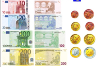

{kind=link}
1952: venne firmata a Parigi da sei membri della CECA il Trattato per la Comunità Europea di Difesa (CED) che però non venne ratifiacato dalla Francia perché non voleva che la Germania fosse riarmata; se ciò fosse avvenuto doveva essere all'interno di una comunità europea. De Gasperi aveva fatto inserire nella CED, la Comunità Politica Europea (CPE) che conteneva tantissimi passaggi oggi inseriti nel trattato costituzionale.
1957: Belgio, Francia, Germania, Italia, Lussemburgo, Paesi Bassi fondano l'Unione Europea
1958: entrano in vigore altri due organismi con il Trattato di Roma:
- Comunità Europea dell'Energia Atomica (CEEA o Euratom);
- Comunità Economica Europea (CEE).
1961: Tentativi di ingresso della Gran Bretagna;
1963: Veto francese (la Francia dice di no all'ingresso della Gran Bretagna). Il Presidente francese voleva un Europa francocentrica;1965: il Consiglio approva il cambiamento dall'unanimità alla regola della maggioranza in importanti materie; in conseguenza di questo la Francia non partecipa alle riunioni per oltre sei mesi bloccando l'attività comunitaria;
1966: Compromesso di Lussemburgo con i quali gli stati europei si impegnano ad evitare di decidere a maggioranza; quindi di raggiungere l'unanimità quando uno o più stati membri invocavano interessi vitali;
1973: entrano nell'Unione Europea Danimarca, Irlanda, Gran Bretagna;
1979: Prima elezione del Parlamento Europeo;
1981: entra nell'Unione Europea la Grecia;
1985: Consiglio europeo a Milano, dove si decide di creare una conferenza intergovernativa in cui lavorano i capi di stati e di governo;
1986: Atto Unico Europeo: libertà di circolazione di persone e dei capitali, creazione del Consiglio Europeo, unione economico-sociale; entrano Portogallo e Spagna;
1990: Firma degli Accordi di Schengen;
1992: Viene redatto il Trattato di Maastricht;
1993: Entra in vigore il Trattato di Maastricht, con il quale viene sostituita la denominazione CEE con quella di Comunità Europea;
1995: entrano nell'Unione Europea: Austria, Finlandia, Svezia;
1997/98: Entra in vigore il Trattato di Amsterdam;
1999: Unione Monetaria Europea (UEM); entra in circolazione l'euro nel 2002;

2000: Viene approvato il trattato di Nizza, sottoscritto nel 2001 ed entrato in vigore nel 2003;
2004: firmata a Roma la Costituzione Europea, che non verrà ratifacata; entrano nell'Unione Cipro, Repubblica Ceca, Estonia, Lituania, Lettonia, Ungheria, Malta, Polonia, Slovacchia, Slovenia;
2007: entrano nell'Unione Europea Bulgaria e Romania. Il Consiglio Europeo di Bruxelles il 23 giugno raggiunge l'accordo per un nuovo Trattato di Riforma